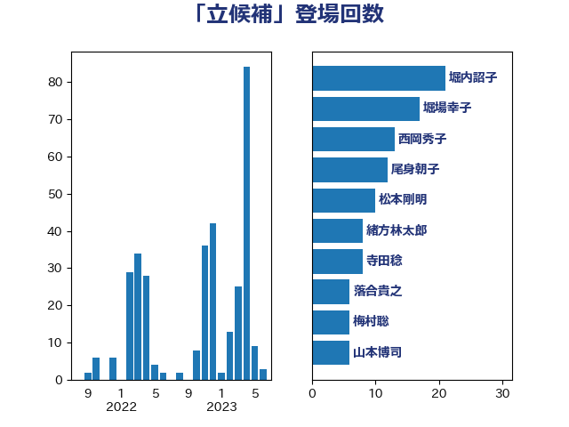

単語「立候補」

| 堀内詔子 | 自由民主党 | 21 回 |
| 堀場幸子 | 日本維新の会 | 17 回 |
| 西岡秀子 | 国民民主党 | 13 回 |
| 尾身朝子 | 自由民主党 | 12 回 |
| 松本剛明 | 自由民主党 | 10 回 |
| 緒方林太郎 | 無所属 | 8 回 |
| 寺田稔 | 自由民主党 | 8 回 |
| 落合貴之 | 立憲民主党 | 6 回 |
| 梅村聡 | 日本維新の会 | 6 回 |
| 山本博司 | 公明党 | 6 回 |
| 守島正 | 日本維新の会 | 6 回 |
| 伊藤孝恵 | 国民民主党 | 6 回 |
| あかま二郎 | 自由民主党 | 6 回 |
| 田畑裕明 | 自由民主党 | 5 回 |
| 浮島智子 | 公明党 | 5 回 |
| 山添拓 | 日本共産党 | 5 回 |
| 奥野総一郎 | 立憲民主党 | 5 回 |
| 塩川鉄也 | 日本共産党 | 5 回 |
| 中川貴元 | 自由民主党 | 5 回 |
| 長浜博行 | 無所属 | 4 回 |
| 金子恭之 | 自由民主党 | 4 回 |
| 石川香織 | 立憲民主党 | 4 回 |
| 浜田聡 | NHK党 | 4 回 |
| 山口俊一 | 自由民主党 | 4 回 |
| 小沢雅仁 | 立憲民主党 | 4 回 |
| 古川直季 | 自由民主党 | 4 回 |
| 中川康洋 | 公明党 | 4 回 |
| 谷田川元 | 立憲民主党 | 3 回 |
| 米山隆一 | 立憲民主党 | 3 回 |
| 宮本岳志 | 日本共産党 | 3 回 |
| 冨樫博之 | 自由民主党 | 3 回 |
| 齊藤健一郎 | 無所属 | 2 回 |
| 野田聖子 | 自由民主党 | 2 回 |
| 近藤和也 | 立憲民主党 | 2 回 |
| 西村智奈美 | 立憲民主党 | 2 回 |
| 芳賀道也 | 国民民主党 | 2 回 |
| 篠原孝 | 立憲民主党 | 2 回 |
| 福島みずほ | 社会民主党 | 2 回 |
| 福山哲郎 | 立憲民主党 | 2 回 |
| 柴愼一 | 立憲民主党 | 2 回 |
| 斎藤アレックス | 国民民主党 | 2 回 |
| 岩谷良平 | 日本維新の会 | 2 回 |
| 山本剛正 | 日本維新の会 | 2 回 |
| 山岸一生 | 立憲民主党 | 2 回 |
| 山下芳生 | 日本共産党 | 2 回 |
| 小渕優子 | 自由民主党 | 2 回 |
| 宮路拓馬 | 自由民主党 | 2 回 |
| 城井崇 | 立憲民主党 | 2 回 |
| 伊藤岳 | 日本共産党 | 2 回 |
| 中西祐介 | 自由民主党 | 2 回 |
| 三ッ林裕巳 | 自由民主党 | 2 回 |
| 馬淵澄夫 | 立憲民主党 | 1 回 |
| 青木愛 | 立憲民主党 | 1 回 |
| 長谷川英晴 | 自由民主党 | 1 回 |
| 長谷川淳二 | 自由民主党 | 1 回 |
| 鈴木宗男 | 日本維新の会 | 1 回 |
| 野田佳彦 | 立憲民主党 | 1 回 |
| 重徳和彦 | 立憲民主党 | 1 回 |
| 遠藤良太 | 日本維新の会 | 1 回 |
| 辻元清美 | 立憲民主党 | 1 回 |
| 足立康史 | 日本維新の会 | 1 回 |
| 西村康稔 | 自由民主党 | 1 回 |
| 臼井正一 | 自由民主党 | 1 回 |
| 羽田次郎 | 立憲民主党 | 1 回 |
| 福重隆浩 | 公明党 | 1 回 |
| 石垣のりこ | 立憲民主党 | 1 回 |
| 源馬謙太郎 | 立憲民主党 | 1 回 |
| 渡辺創 | 立憲民主党 | 1 回 |
| 浜田靖一 | 自由民主党 | 1 回 |
| 橋本岳 | 自由民主党 | 1 回 |
| 柳ヶ瀬裕文 | 日本維新の会 | 1 回 |
| 林芳正 | 自由民主党 | 1 回 |
| 杉本和巳 | 日本維新の会 | 1 回 |
| 新藤義孝 | 自由民主党 | 1 回 |
| 斉藤鉄夫 | 公明党 | 1 回 |
| 徳永久志 | 無所属 | 1 回 |
| 岸真紀子 | 立憲民主党 | 1 回 |
| 小西洋之 | 立憲民主党 | 1 回 |
| 小川淳也 | 立憲民主党 | 1 回 |
| 寺田学 | 立憲民主党 | 1 回 |
| 大西健介 | 立憲民主党 | 1 回 |
| 大塚耕平 | 国民民主党 | 1 回 |
| 大串博志 | 立憲民主党 | 1 回 |
| 和田政宗 | 自由民主党 | 1 回 |
| 吉良よし子 | 日本共産党 | 1 回 |
| 吉田はるみ | 立憲民主党 | 1 回 |
| 加藤竜祥 | 自由民主党 | 1 回 |
| 伊藤渉 | 公明党 | 1 回 |
| 中司宏 | 日本維新の会 | 1 回 |
| 上川陽子 | 自由民主党 | 1 回 |
| おおつき紅葉 | 立憲民主党 | 1 回 |